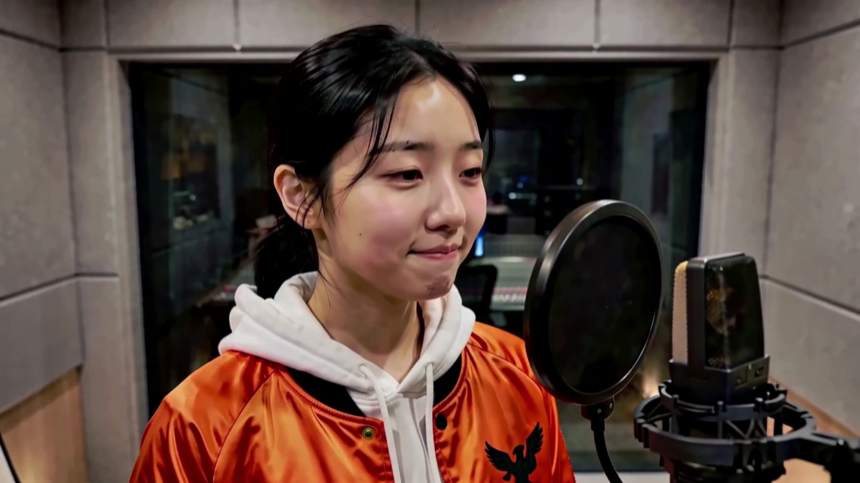
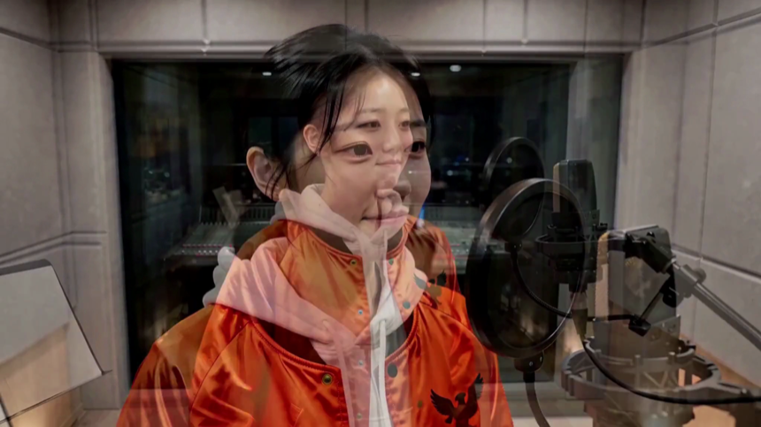
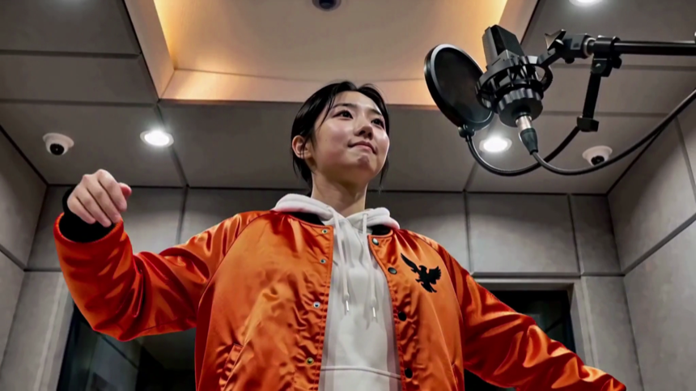
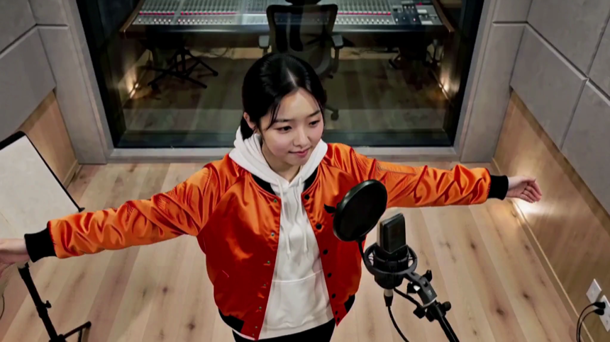
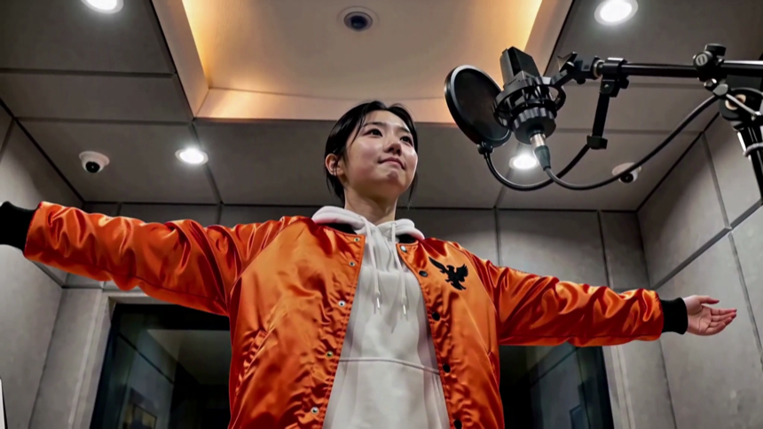
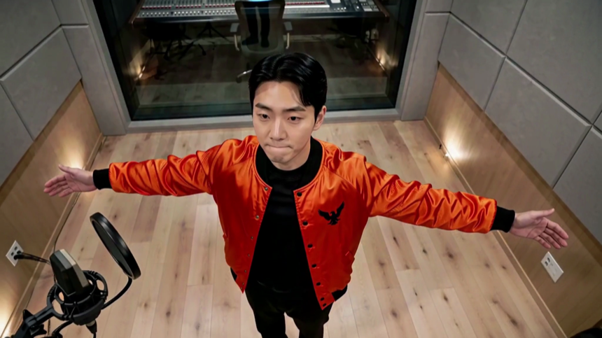
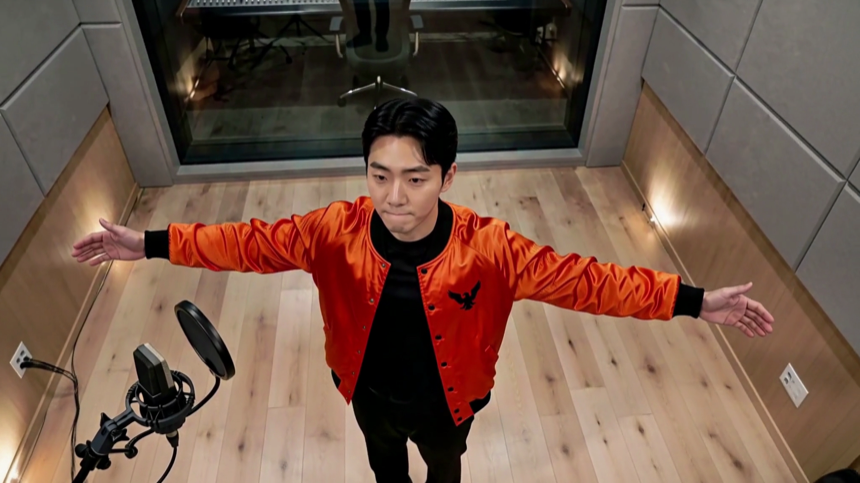
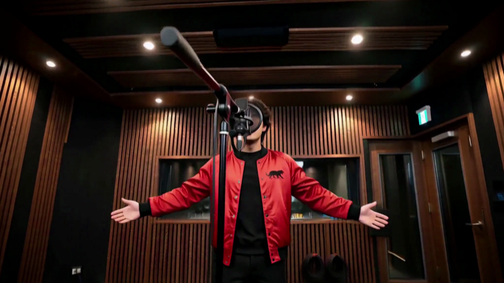
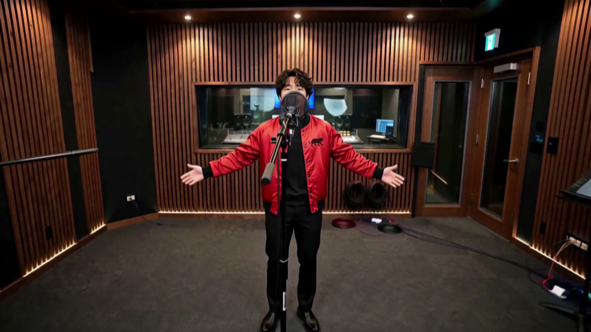
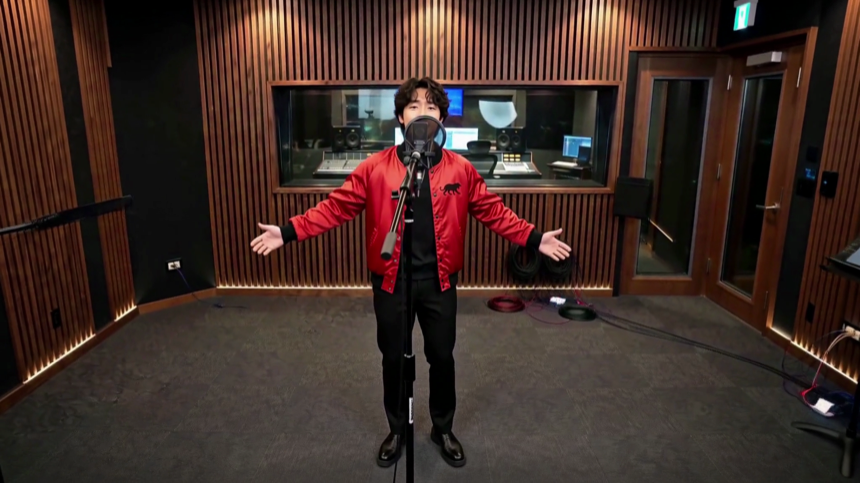

키프레임 채취 — 고를 것
2026-09-08 19:20 · 새 문형으로 뽑은 세 판 · 34장 · 추가 집행 $0
번호로 답해 주시면 됩니다 — 판 이름과
A3 ·
B2 처럼요.
- A · 자가 재서 통과한 장
- B · 자가 못 잰 장. 반려가 아니라 «모름»입니다 —
고개를 젖히거나 측면이면 검출이 실패하는데, 그 장이 각도가 제일 벌어진 장이라 버리지 않았습니다.
- 눈 감음·프레임 잘림은 애초에 안 올라옵니다.
T11 한화 · 여자
243프레임 전수 · 눈 감음 0장
🟢 바로 쓸 수 있다 11장
A10.42초얼굴 27.1% · 3/4
A20.83초얼굴 38.4% · 3/4

A31.29초얼굴 39.3% · 3/4

A41.75초얼굴 37.5% · 3/4

A52.21초얼굴 36.7% · 3/4
A62.71초얼굴 23.8% · 3/4

A73.17초
A83.62초얼굴 21.3% · 3/4
A94.08초
A104.54초
A114.62초
🟡 자가 못 잰 것 — 눈으로 보실 것 1장

B10.58초얼굴 35.5% · 3/4
T11 한화 · 남자
243프레임 전수 · 눈 감음 0장
🟢 바로 쓸 수 있다 4장
A10.50초

A21.04초
A31.54초
A42.00초
🟡 자가 못 잰 것 — 눈으로 보실 것 7장
B10.42초
B20.88초
B31.38초
B41.83초

B52.33초
B62.88초얼굴 19.5% · 측면
B72.96초
T15 · 남자
243프레임 전수 · 눈 감음 1장
🟢 바로 쓸 수 있다 6장
A10.50초
A20.96초
A31.54초
A42.00초
A52.46초
A62.54초얼굴 20.5% · 3/4
🟡 자가 못 잰 것 — 눈으로 보실 것 5장
B10.42초
B20.88초

B31.42초

B41.88초

B52.33초
⏳ T18 여자 판이 마지막으로 렌더 중입니다. 나오면 여기 네 번째로 붙이겠습니다.
대표님께
판마다 쓸 번호를 골라 주십시오.
⚠️ 자가 답하는 것은 「물리적으로 쓸 수 있다」까지입니다 —
「3분 보고 싶은 얼굴인가」는 대표님 눈이 정본입니다.